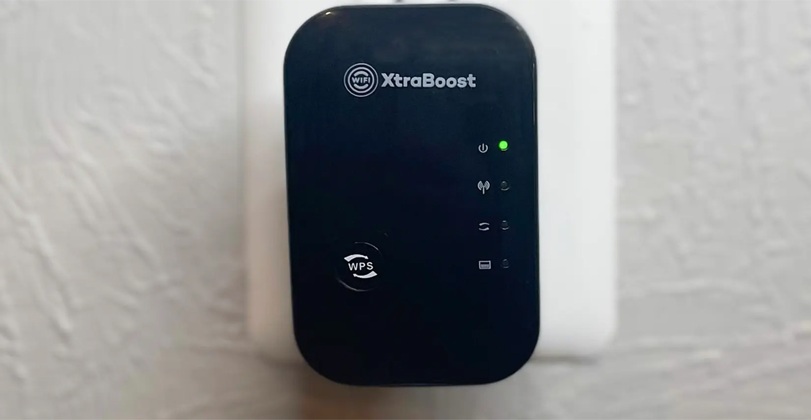
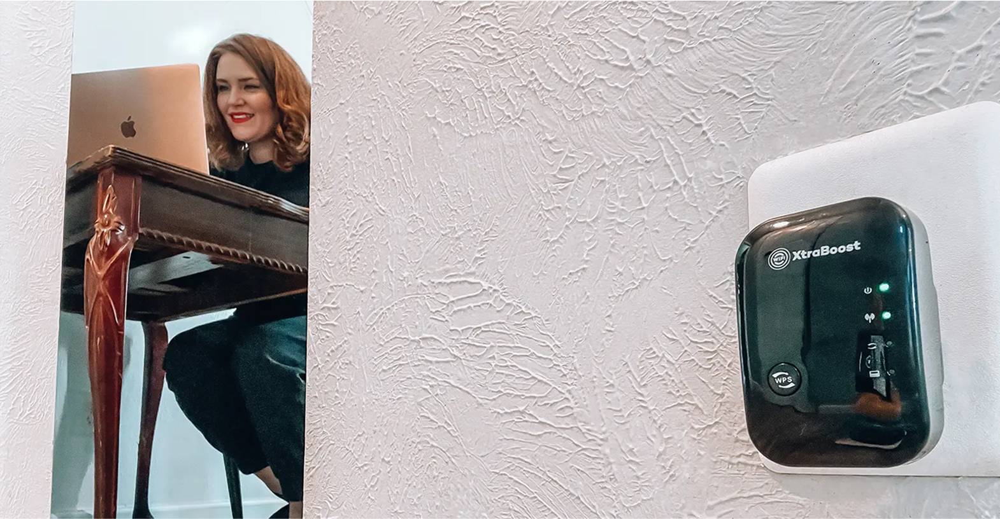
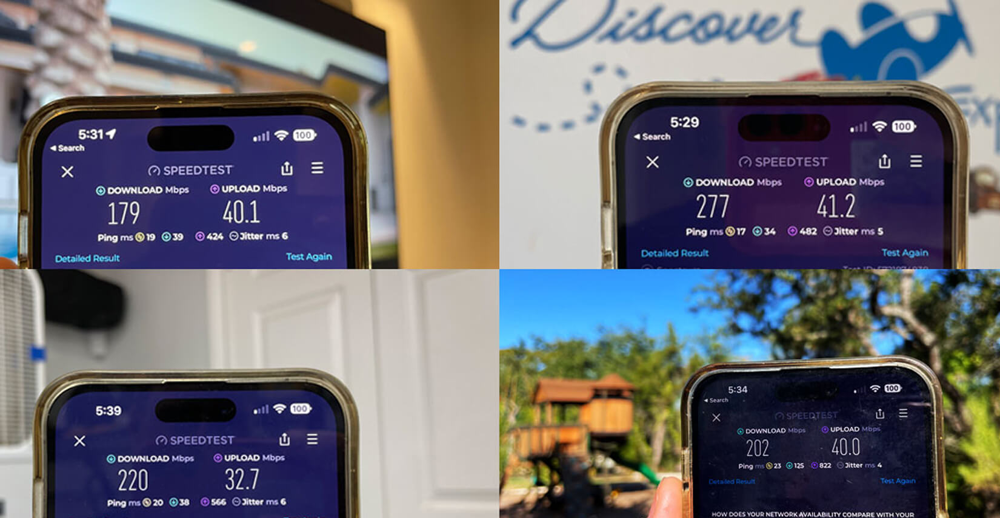
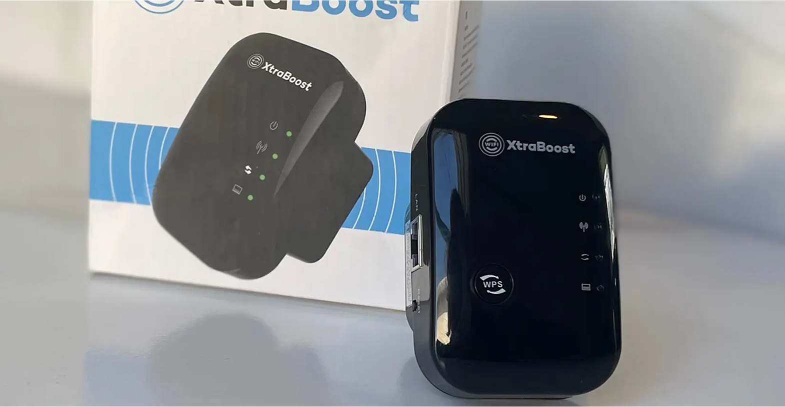

WiFi Xtraboost Is The Best WiFi Booster We Tested - Here's What We Found...
Updated: August 2025
This new product blew away the competition this year, earning our #1 Top Pick.
With more of our readers working from home it's clear that the demand is higher than ever for WiFi Boosters. Most home WiFi routers struggle to reach far bedrooms, offices, or outdoors with a usable, stable signal. There are some options on the business market that are great, but they require extensive supporting hardware, setup knowledge and are expensive. Enter WiFi Xtraboost. This new company has figured out a way to offer a far superior product (even the biggest networking experts agree) at a fraction of the price with their limited time 50% off discount.
The price was so low, we were skeptical that it could deliver on the performance, but we were wrong. Now with positive user feedback rolling in their new WiFi Xtraboost is quickly becoming the most successful device of 2025. We knew it was time to put in to the test against the best of the best.
Here is what we found.
Plug & Play Setup
WiFi Xtraboost was created by a group of networking engineers that hated hard to use, overly complicated WiFi extenders. They claim anyone can setup WiFi Xtraboost in less than 5 minutes and we have to admit – setup couldn’t have been easier.
We always order it ourselves to ensure we get the same experience as any customer would. It arrived 3 days later and when we opened the box – we were surprised by how small this thing is. You can easily plug it into any wall socket, making it sit flat against the wall.
Designed to be used without any technical knowledge whatsoever, you press a single button on the booster to pair it with your router. Seconds later, it found and connected to our WiFi – in a total of only 57 seconds, it was ready to use. It was time to test what mattered most, WiFi improvement.
Complete WiFi Coverage
The issue with most WiFi systems, is you have a single router in one part of your house. Then you are sending the WiFi signal through walls, appliances, floors, ceilings, etc. If you even get a signal at the farthest point, it may not only be slow, but unreliable (dropped calls, stuttering video, etc). Each wall can drop the speed by 1/2 or more.
For this torture test, I placed the router on the farthest side of my house which is my living room and measured the signal through the rest of the house. Before WiFi Xtraboost, the living room with the router had 5 bars of signal, the master bedroom 3 bars of signal, the basement 2 bars and the outdoor area was 1 bar. Even when it was usable it was still slow.
Next, I placed the WiFi Xtraboost in the master bedroom which is located in the middle of the house. You want enough signal at the booster so it can extend your WiFi at top speeds. Remarkably, we saw an instant huge boost in range and speed.
Here Are The WiFi Coverage Results:
5 Bar WiFi Through Solid Walls
All the rooms on the first floor now have 5 bars of WiFi. The speed at the farthest part of the house doubled. Even with my concrete walls (which are the hardest) the booster was able to break through.
5 Bar WiFi Across 3 Floors (even the basement)
The one area I thought was going to be minimal was the basement. Not only did WiFi Xtraboost deliver 5 full bars of WiFi to every room on the first floor, we measured 5 bars in my basement which shares a wall with the garage.
I do have a small attic turned into a spare bedroom, when tested it also got 4 bars (from 1) but the speed was more than 2x before. An excellent result and completely unexpected.
4-5 Bar WiFi In Backyard & Garage
After I saw the improvement in the basement, I decided to see how far it could go. Walking out to the farthest corner of my fence, I was able to still get 4 bars of signal while the rest of the yard was 4-5 as well.
Overall, this tiny device put out big performance improvements in connection reliability. I was able to make video calls easily walking around my house where before I would have to stay next to the router.
Big Speed Increases
Next up, we wanted to see exactly how much of an improvement WiFi Xtraboost would make. We ran multiple speed tests, in each location.
During our tests, WiFi Xtraboost worked extremely well. Our speeds increased from 80% to an amazing 579%! These are professional level speeds, in my home.
| Location | Before | WiFi Xtraboost | Improvement |
|---|---|---|---|
| Kitchen | 128 mbps | 282 mbps | 120% |
| Bed 1 (close) | 160 mbps | 277 mbps | 73% |
| Bed 2 (mid) | 90 mbps | 260 mbps | 189% |
| Bed 3 (far) | 42 mbps | 179 mbps | 326% |
| Basement | 28 mbps | 190 mbps | 579% |
| Garage | 67 mbps | 220 mbps | 228% |
| Yard | 37 mbps | 202 mbps | 446% |
During our tests, WiFi Xtraboost worked extremely well. Our speeds increased from 80% to an amazing 579%! These are professional level speeds, in my home.
Here are the rest of the tests we did:
4k Video Streaming
This is where my family saw the biggest benefit. Now videos loaded fast at full 4k resolution. We watched several movies from Netflix, Hulu, HBO, Peacock, Amazon, on TVs throughout the house for a week without complaints. If you enjoy high quality movies online, this is for you.
Video Calling & Meetings
We tested multiple calling platforms: Facetime, Google Meet, Skype, Zoom, Facebook Video, and the results were the same. Connections were stable and the quality was crystal clear. We have poor cellular service at the house and this allowed us to make WiFi calls reliably, with zero dropped calls or voice lag.
Downloading
Because of the huge improvement in speed, downloads were about 2-3x faster than before. I was able to download a large movie file for work in just under 2 minutes where it was taking me 10-15 minutes before. Outstanding result.
Online Gaming
We tested multiple handheld game systems, games on the smartphone, tablets and PC. Let me tell you that when it's slow, my kids are complaining. NetBoost provided a huge improvement in games, especially when downloading and online gameplay. My son is a competitive online streamer and his words were "This is a sick setup".
Editors Note: Zero Dropouts
Beyond the impressive speed improvements & complete coverage, the 100% solid reliability is a winner. Before we had calls drop, videos stop, downloads fail, with our old WiFi setup.
Now with WiFi Xtraboost, it just would not stop working, no matter what we were doing, our internet was working. This is the BIGGEST improvement I can say when you decide to run a device as capable as WiFi Xtraboost.
Editors Note: Zero Dropouts
WiFi Xtraboost offers 24/7 support for all it's customers. Most other companies only have certain hours, questions can come up any hour of the day. We sent a test request with a fictional problem and got a fast response within hours. A+
Some Questions We've Had
Q: Does WiFi Xtraboost require any installation?
No, it works directly out of the box and is really simple to use. You will have it setup and extending your WiFi in about 2 minutes.
Q: Do I need to buy anything else
No, WiFi Xtraboost comes with everything you need. There are no extra wires, batteries or accessories to deal with.
Q: Is it safe to boost WiFi?
Absolutely yes. The device, while powerful, is perfectly safe to use in your home or office. It's just not recommended for outdoors or wet places.
How Much Does It Cost?
Traditional WiFi extenders go for €100 - €350+ so you would expect the WiFi Xtraboost to be at least this... Normally, the WiFi Xtraboost retails for €99, which is a great deal compared to anything else you can buy on the market.
However, right now they have a massive 50% first-time buyer discount bringing the price down to just €49. That is by far the highest value we've ever tested for a device that will improve your internet speed & reliability. If you find it in stock, it's a no brainer.
How Do I Get The Real WiFi Xtraboost?
The only place to get WiFi Xtraboost is from the official website.
 Apply Discount & Check Availability**UPDATE: Since the launch of WiFi Xtraboost has been so popular that they have decided to extend their first-time buyer 50% off discount. They only ask that you tell your family & friends how much you love your WiFi Xtraboost!